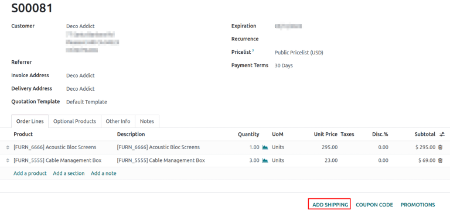

Imprimir etiquetas de envío¶
Integrar Odoo con transportistas de terceros para imprimir etiquetas de envío que incluyan precio, dirección de destino, números de rastreo y códigos de barra.
Configuración¶
Para generar etiquetas para transportistas de terceros, primero instale el conector del transportista externo. Después, configure y active el método de entrega, asegúrese de configurar el Nivel de integración a Obtener tarifas y crear envíos para generar etiquetas de envío. Finalmente, ingrese la dirección de origen de la empresa y el peso de los productos.
Ver también

Imprimir etiquetas de rastreo¶
Las etiquetas de rastreo se generan después de que se valida la orden de entrega.
Si tiene instaladas tanto las aplicación Ventas como Inventario, primero vaya a y abra la cotización a la que desea agregar el costo de envío, confirme la orden de venta y valide la |orden de envío|.
Si solo tiene la aplicación Inventario instalada, cree órdenes de envío directamente en la aplicación , agregue el transportista externo en el campo Transportista y valide la |orden de envío|.
Agregar un envío en la cotización.¶
Para generar una etiqueta de rastreo para una orden, primero cree una cotización en , haga clic en Nuevo y llene el formulario de cotización. Después, haga clic en Agregar envío en la esquina inferior derecha de la cotización.
En la ventana emergente resultante, seleccione el transportista deseado desde el menú desplegable Método de envío. Al hacer clic en Obtener tarifa se mostrará el costo de envío para el cliente, en el campo Costo del transportista.
Importante
Si al hacer clic en Obtener tarifa aparece un error, asegúrese de que la dirección del almacén y el peso de los productos de la orden estén bien configurados.
Haga clic en Agregar para agregar los costos a la cotización, que está enlistada como producto de entrega configurado. Finalmente, haga clic en Confirmar en la cotización y haga clic en el botón inteligente Entrega para ingresar a la |orden de envío|.

Truco
Para usuarios que no tengan la aplicación Ventas instalada, el transportista se especifica en la orden de entrega del campo Transportista de la pestaña Información adicional.
Validar la orden de entrega¶
En un formulario de orden de entrega, vaya a la pestaña Información adicional para asegurarse de que el transportista externo se agregó al campo Transportista.
Importante
Si la aplicación Ventas no está instalada, el transportista se configura en el campo Transportista.
Después de que los artículos en la orden se hayan empaquetado, haga clic en Validar para obtener el número de rastreo y generar una etiqueta de envío.
Nota
Cree o seleccione una orden de envío existente en la aplicación y seleccione la tarjeta órdenes de envío.
El número Referencia de rastreo se genera en la pestaña Información adicional de la orden de entrega. Haga clic en el botón inteligente Seguimiento para acceder al enlace de seguimiento del sitio web del transportista.
La etiqueta de rastreo se encuentra en formato PDF en el chatter.

Nota
Para envío de múltiples paquetes, se genera una etiqueta por paquete. Cada etiqueta aparece en el chatter.

Etiqueta de ejemplo generada desde el conector de envío de Odoo con FedEx.¶